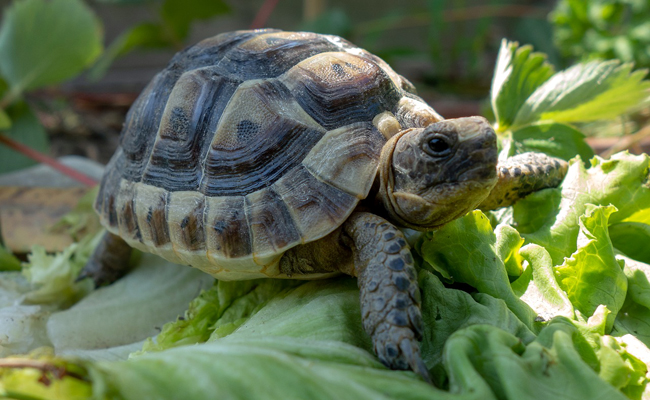
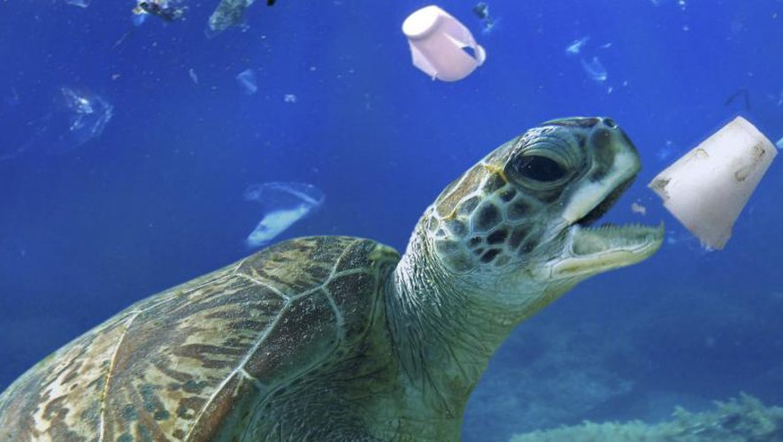

Les différents types de Tortue
Les tortues terrestes
Les tortues hermann
Les tortues d’Hermann sont parfaitement adaptées aux débutants. Ce sont des tortues très autonomes et qui ont un très bon sens de l’orientation. Si vous les laissez dans votre jardin, elles pourront se nourrir toutes seules de feuilles, de fleurs, de fruits, de vers et même d’escargots. Elles ont une espérance de vie qui avoisinerait les 40 ans. De quoi vous occuper plusieurs années.

La tortue étoilée d'Inde
La tortue étoilée d’Inde
Avec une taille moyenne de 26 cm de long, la tortue Geochelone elegans est originaire d’Inde. Longtemps considérée comme une espèce sensible à cause de son importation massive, les tortues de cette espèce élevées en captivité sont aujourd’hui recommandées comme animal de compagnie.

Tortue Testsudo
Les tortues Testudo regroupent 5 espèces différentes. Ces tortues sont souvent utilisées comme animaux de compagnie. Cependant, les espèces Testudo nord-africaines seraient assez sensibles
La tortue de horsfield
Cette espèce de tortue terrestre est très présente dans les animaleries en France. Cela dit, c’est une tortue qui demande un peu plus d’expérience que les autres. Il est donc conseillé d’en acquérir une après avoir vécu une première expérience avec une autre tortue au préalable ou de demander conseil à des amateurs de l’espèce.
La tortue léopard et la tortue sillonnée
Ces deux espèces sont bien plus grosses que celles citées précédemment. En effet, comptez 30 à 50 cm pour la première et jusqu’à 70 cm pour la seconde. Elles sont aussi par conséquent très lourdes. Ce sont des tortues à croissance rapide et qui sont donc faciles à élever. Cependant, il faut prévoir un grand terrarium pour ces espèces et même un enclos extérieur pour l’été.

Photo 1 = Tortue léopard
Photo 2 =Tortue sillonée
Les tortues aquatiques
Ceci est un lien vers les différents types de tortue aquatique
